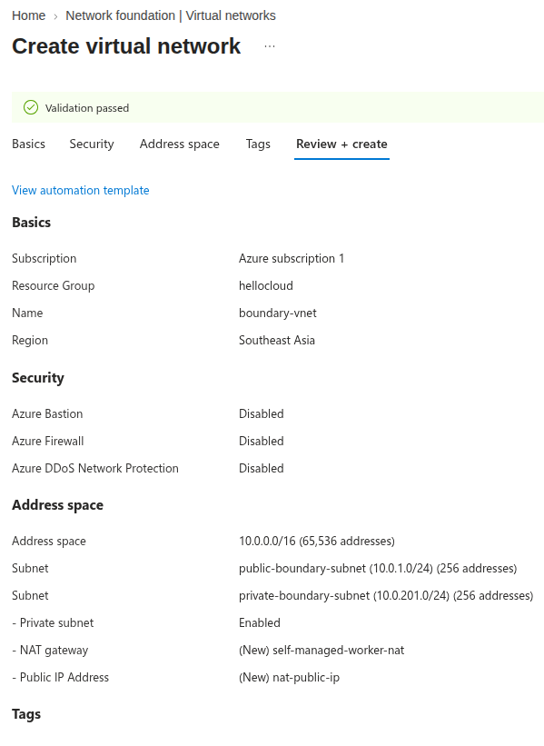

Boundary in Azure: the private worker, step by step
The gentlest of the three builds. We put a virtual machine in a private network with no public address, and reach it over SSH from a laptop that holds no key — without exposing a single thing of our own to the internet.
Read it, then build it 🛠️
This page is written to be followed along with, not just read. Open the Excalidraw board beside it and work through the steps yourself — every screen I filled in is captured there, in the order I filled it in.
Reading gives you the shape of the thing. Only doing it gives you the understanding. I did not learn any of this by reading, and I do not think anyone does.
New to Boundary? Read What is HashiCorp Boundary? first. It explains the vocabulary used here — controller, worker, target, scope — in plain words. This page assumes you have read it.
Contents
What we are building
Three virtual machines and two networks. In plain terms:
- A target VM — the server we actually want to reach. It lives in a private subnet with no public address and no way out to the internet.
- A worker VM — the courier. Also private, but it can reach the internet outbound through a NAT gateway so it can talk to HashiCorp's control plane.
- A temporary jump host — used once, to copy the Boundary binary onto the worker, and then deleted.
Because our worker has no public address, our laptop cannot connect to it directly. So the session travels laptop → HashiCorp's managed worker → our worker → target. The setting that tells Boundary which of our workers should make that final hop is called an egress worker filter, and that is where the name of this design comes from.
Is it bad that HashiCorp's machines carry my traffic? For most people, no. The traffic is encrypted end to end and they cannot read it. But if you work somewhere that says session traffic must never transit infrastructure you do not operate, this design will not pass — and the Google Cloud walkthrough shows the alternative.
Before you start
You need:
- An Azure account where you can create networks and virtual machines.
- An HCP account with a Boundary cluster. The free tier is enough.
- An SSH key pair on your laptop. If you do not have one:
ssh-keygen -t ed25519 -f ./boundary-azure
Money. The NAT gateway is the expensive part here — it bills per hour whether or not anything uses it. Three small VMs and a NAT gateway left running for a month will cost real money. Set a budget alert now, and do the clean-up step when you finish.
Step 1 · Two networks, joined
Everything in Azure lives in a resource group, which is just a
folder. Create one first — call it something like boundary-lab — and
put everything else inside it. Deleting the folder later deletes everything in it,
which makes clean-up a single action.
The boundary network
Create a virtual network (Azure's word for a private network; AWS calls it a VPC). Give it two subnets:
- A public subnet for the temporary jump host.
- A private subnet for the worker.
Then create a NAT gateway and attach it to the private subnet. This is what lets the worker reach the internet outbound — to download the binary and to register with HCP — without anything on the internet being able to reach the worker.
The profile network
A second virtual network, with one private subnet, for the target VM. No NAT gateway here at all. This machine has no way to reach the internet and no way to be reached from it, which is exactly what we want.
Join them with peering
Peering connects two networks so machines in one can talk to machines in the other. Open the first network, go to Peerings, and add one pointing at the second.
A pleasant Azure surprise. When you create the peering, Azure adds the routes for you. In AWS you would now be editing route tables by hand on both sides. Here there is nothing more to do — and you do not need a custom route table for simple direct peering at all.
Step 2 · Firewall rules
In Azure the firewall is a network security group, usually shortened to NSG. You attach it to a subnet or to a machine's network card.
The trick to getting these right is to write them in the direction traffic actually flows. Here are the three sets, in order:
jump host NSG
inbound SSH (22) from your own public IP address
outbound SSH (22) to the worker
worker NSG
inbound SSH (22) from the jump host (for setup only)
outbound TCP 9202 to HCP's managed workers (to register)
outbound SSH (22) to the target VM (the actual job)
deny everything else, both directions
target NSG
inbound SSH (22) from the worker, and nothing else
outbound nothing at allRead the worker's rules again. There is no inbound rule from the internet. None. The worker reaches HCP by dialling outward and holding that connection open — HCP never connects to it. This is the single most important thing to understand about how Boundary workers behave, and it is why this design exposes nothing.
Notice also that the target's outbound rule is "nothing". It does not need to reach anything, so we say so. Free security, one dropdown.
Step 3 · Three machines
Create three virtual machines, all Ubuntu, all using the SSH key you generated:
| Machine | Subnet | Public IP? | Purpose |
|---|---|---|---|
| jump host | boundary / public | Yes | Copy the binary across. Deleted afterwards. |
| worker | boundary / private | No | Runs the Boundary worker service. |
| profile VM | profile / private | No | The server we want to reach. |
After creating them, attach the right NSG to each. In Azure this is done from the machine's network interface, under Settings → Network security group — not from the VM page itself, which is where most people look first.
Step 4 · Install the worker
SSH into the jump host, then from there into the worker. Copy the Boundary binary
across with scp, or briefly allow the worker outbound internet access
and download it directly:
sudo apt-get update && sudo apt-get install -y jq unzip
wget -q "$(curl -fsSL \
"https://api.releases.hashicorp.com/v1/releases/boundary/latest?license_class=enterprise" \
| jq -r '.builds[] | select(.arch=="amd64" and .os=="linux") | .url')"
unzip *.zipNow write the worker's configuration file:
# /home/azureuser/boundary/pki-worker.hcl
hcp_boundary_cluster_id = "<your-cluster-id>"
listener "tcp" {
address = "0.0.0.0:9202"
purpose = "proxy"
}
worker {
public_addr = "192.168.9.4:9202" # the worker's PRIVATE address
auth_storage_path = "/home/azureuser/boundary/worker1"
tags {
owner = ["kst"]
cloud-env = ["azure"]
region = ["uae-north"]
}
}
The most important line on this page.
public_addr is set to a private address. That is not a
mistake. It tells the controller where this worker can be reached — and since
your laptop cannot reach a private Azure address, the controller knows the
session must be relayed through HCP's managed workers instead. Put a real public
IP here and you get a completely different design, which is the
Google Cloud walkthrough.
Give the tags some thought while you are here. They are labels, and later you will write a filter that selects a worker by them. Adding a tag now is free; adding one after targets already reference the worker is fiddly. Tag on things you might one day want to select by: cloud, region, owner, environment.
Then run it as a service rather than in your shell, so it survives you logging out:
sudo mv boundary /usr/local/bin/
sudo useradd --system --home /etc/boundary.d --shell /bin/false boundary
sudo chown -R boundary:boundary /home/azureuser/boundary
# /etc/systemd/system/boundary-worker.service
[Unit]
Description=Boundary PKI Worker
Requires=network-online.target
After=network-online.target
[Service]
User=boundary
Group=boundary
ExecStart=/usr/local/bin/boundary server \
-config=/home/azureuser/boundary/pki-worker.hcl
[Install]
WantedBy=multi-user.targetsudo systemctl daemon-reload
sudo systemctl enable --now boundary-worker
sudo journalctl -u boundary-worker -fStep 5 · Register the worker
The log will say the node is not yet authorized. This is correct. It is not an error, and nothing is broken.
Registration is a handshake with two halves. The worker writes a token into its storage directory, and you paste that token into the controller to approve it:
cd /home/azureuser/boundary/worker1
cat auth_request_tokenCopy that value, open the Boundary admin console, go to Workers → New, and paste it. Watch the worker's log as you do. You will see a line like this:
{"op":"reverseconn_ent.(*dialingListener).SetAddresses",
"data":{"address":"<id>.proxy.boundary.hashicorp.cloud:9202",
"msg":"dialing"}}Read that carefully, because it is the whole architecture in one line. The worker is dialing. It is opening a connection outward to HashiCorp and holding it open, so that work can be pushed down it later. That is why the worker needs no inbound firewall rule.
Step 6 · Credentials and a target
Two things to create in the admin console, in this order.
A credential store
This is where the SSH key for reaching the target VM lives. Create a static credential store, then add a username and key pair credential containing the private key that matches the target VM.
An honest limitation. A static credential like this does not rotate. It is a key sitting in Boundary, and if it leaks you are back to the problem we were trying to escape. For anything real you would use HashiCorp Vault as the credential store, so that a fresh short-lived credential is generated per session. That is a bigger topic; I am flagging it so you do not mistake this for the finished pattern.
A target
Create an SSH target. Give it the target VM's private address and port 22. Then attach the credential you just made as an injected application credential.
"Injected" means the worker uses the credential on your behalf and you never see it. The alternative, "brokered", hands the credential to you to use yourself. Injected is the one you want — it is the difference between "the system logs me in" and "the system gives me a key".
Step 7 · The egress filter
Now we tell Boundary which worker should make the final hop to the target. On the target, set an egress worker filter:
"azure" in "/tags/cloud-env"
That reads as: use any worker whose cloud-env tag contains
azure. Which is the worker we built, because we tagged it that way in
step 4.
The full path is now decided: laptop → HCP managed worker → our worker → target VM.
Step 8 · Connect, and prove it
Log in and connect:
boundary authenticate password \
-auth-method-id=<your-auth-method-id> \
-login-name=<your-user>
boundary connect ssh -target-id=<your-target-id>If you land on a shell prompt on the target VM, it worked. But do not stop there — the interesting part is proving how it worked. Run this on the target VM itself:

sudo ss -tanp | grep ':22' on the target. There is an established
SSH connection, and it comes from the worker's private address. Nothing else. The
target has no idea Boundary exists — it just sees a neighbour connecting over
SSH.
And on the worker, look at where its connections go:
sudo ss -tnp state established '( dport = :9202 )'
Local Address:Port Peer Address:Port Process
10.0.201.4:42994 54.172.227.234:9202 boundary
10.0.201.4:49314 54.172.227.234:9202 boundary
10.0.201.4:50574 3.233.88.122:9202 boundaryThose peer addresses are HashiCorp's managed workers. Our worker dialled them. Nobody dialled us. Read the two captures together and the design is no longer a claim on a diagram — it is a fact you can see.
You can also confirm the login on the target the ordinary way, which is a nice reminder that everything downstream of Boundary is completely normal:
sudo tail -f /var/log/auth.logAzure gotchas
The NSG rules you did not write
Every NSG comes with default rules that you cannot delete. They sit at low priority underneath yours. If something is allowed that you thought you had denied, this is usually why — you were reasoning only about the rules you added. Read the defaults before layering on top of them.
There is no internet gateway to create
If you come from AWS you will go looking for an internet gateway resource and not find one. Azure networks have outbound internet built in. You only create a NAT gateway when you want outbound access from machines that have no public IP — which is exactly our worker's case.
The NSG attaches to the network card
Not to the virtual machine. Look under the VM's network interface settings. This catches everyone once.
Azure writes your peering routes for you
Worth stating as a positive, because it is a genuine difference. Create the peering and the system routes appear. There is no route table step, and going looking for one wastes time.
Clean up
Delete the resource group. Everything you made in this walkthrough was inside it, so one delete removes the VMs, the networks, the NAT gateway and the peering together.
Then remove the worker from the Boundary admin console, and delete the target and credential store. And delete the jump host as soon as the worker is installed — it exists to copy one file across, and a public SSH machine with no remaining purpose is exactly the kind of thing that quietly becomes permanent.
Where to go next. If you want your own machines out of HashiCorp's traffic path, do the Google Cloud ingress walkthrough. If your target network has no route to the internet at all, the AWS multi-hop walkthrough handles that. And when you want to replace the password login with your company account, that is Boundary and Entra ID.